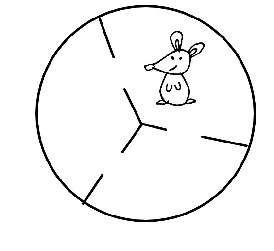

Linear Algebra Coursework
Contents
Linear Algebra Coursework#
Question 1#
Let \(T: \mathbb{R}^2 \to \mathbb{R}^2\) be a linear transformation such that
and
a) [1 mark] Let \(A\) be the matrix representation of \(T\). Write down a matrix \(B\) such that
b) [3 marks] Calculate the matrix \(A\).
c) [3 marks] Sketch the image of the unit coordinate vectors under the linear transformation \(T\) and describe the geometrical effect of the transformation.
d) [1 mark] Describe the null space of \(A\).
Question 2#
Let
Recall that an elementary matrix is a square matrix which results from applying a single row operation to the identity matrix. For example, the matrix
results from the row operation \(r_2 \to r_2 - 2r_1\).
a) [2 marks] Describe the row operation is represented by the elementary matrix
and write down the matrix of its inverse.
b) [2 mark] Write down the matrix which result from the row operation \(r_2 \to r_2 + 2r_1\) and show that it is the inverse of \(E_1\).
c) [3 marks] By reducing \(A\) to echelon form, determine elementary matrices \(E_1, E_2, E_3\) and an upper triangular matrix \(U\) such that:
d) [3 marks] Write down the inverses \(E_1^{-1}, E_2^{-1}, E_3^{-1}\) and hence determine a lower triangular matrix \(L\) such that
e) [3 marks] Determine elementary matrices \(F_1, F_2, F_3\) and upper triangular matrix \(V\) such that
Explain why it is not possible to write \(B\) as a product of a lower and upper triangular matrix.
f) [2 marks] A permutation matrix is a square matrix with a single \(1\) in each row and \(0\)s elsewhere. Determine a permutation matrix \(P\) and lower triangular matrix \(M\) such that
Question 3#
Questions 3 and 4 are about Markov processes. A Markov process is a mathematical system which transitions through a sequence of states according to probabilistic rules. The rules are defined by a Markov matrix which is a square matrix with all nonnegative entries, and where the sum of the entries down any column is 1.
On any given day, the weather in London is either rainy or cloudy (and no other type of weather is possible). If the weather is rainy today, then there is a 80% chance the weather will be rainy tomorrow. However, if the weather is cloudy today, then there is a 60% chance that the weather will be cloudy tomorrow.
The Markov matrix corresponding to the system is:
The probability of the weather being rainy or cloudy on day \(i\) is given by state vector \(v_i\). Then
gives the vector of weather probabilities on day \(i+1\). For example, if it is rainy today then
and
gives the probability of rainy or cloudy weather tomorrow. In turn,
gives the probabilites of rainy or cloudy weather in two days’ time.
a) [2 mark] Given it is cloudy on Monday, calculate the probability that it is cloudy on Wednesday.
b) [2 marks] Determine the eigenvalues of A.
c) [2 marks] Determine the two corresponding eigenvectors.
d) [3 marks] Diagonalise \(A\) and hence derive an expression for \(A^k\) where \(k\in\mathbb{N}\).
e) [3 marks] Calculcate \(\lim_{k \to \infty} A^k\) and describe what the resulting matrix represents.
Question 4#
A mouse lives in a cage that is divided into three rooms. At time \(i=0\) the mouse is in its starting room and at each timestep, the mouse moves with equal probability into one of the two adjacent rooms.
{kind=link}
Let \(v_i\) be a state vector which represents the probability that the mouse is in each of the rooms at timestep \(i\). The Markov matrix for this system is given by
and the initial state is given by
a) [2 marks] Calculate the probability that the mouse is in its starting room at timesteps \(i=1, 2, 3\).
a) [1 mark] Show that \(v_1 = \begin{pmatrix}1\\1\\1\end{pmatrix}\) is an eigenvector of the matrix \(M\) and calculate the corresponding eigenvalue.
b) [4 marks] Calculate the characteristic polynomial of \(M\) and determine its remaining eigenvalues and eigenvectors.
c) [3 marks] Write down invertible matrix \(X\) and diagonal matrix \(\Lambda\) such that
d) [5 marks] Show that the probability that the mouse is in its starting room at time step \(n\) is
Total Marks 50